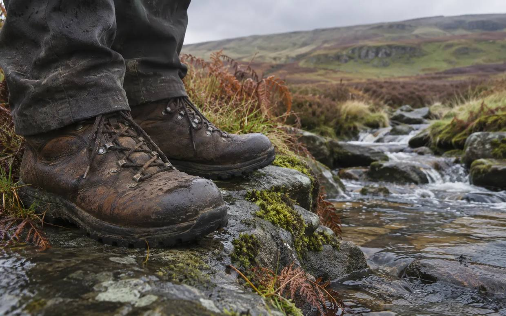
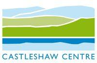
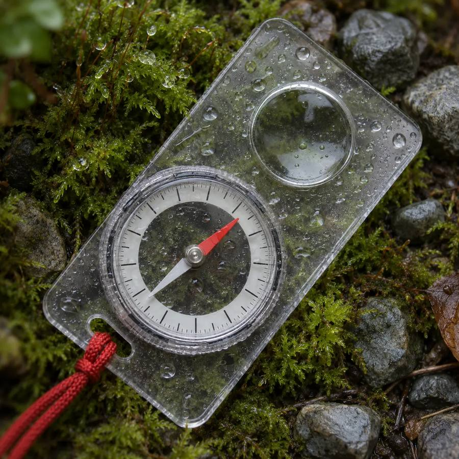
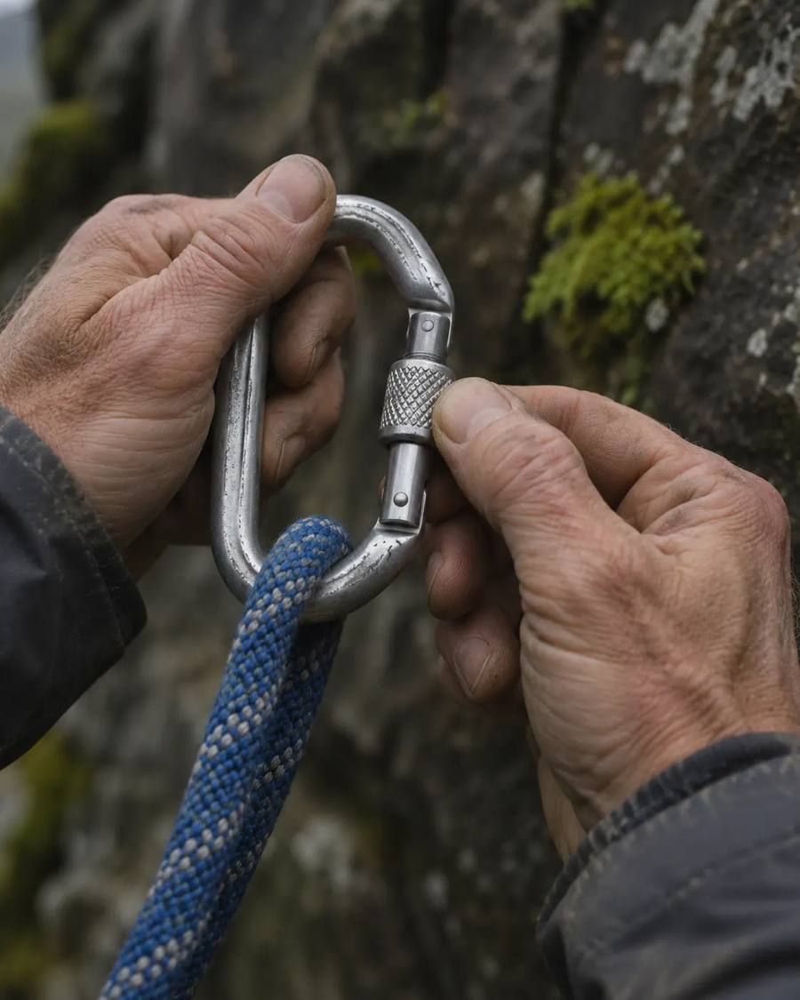
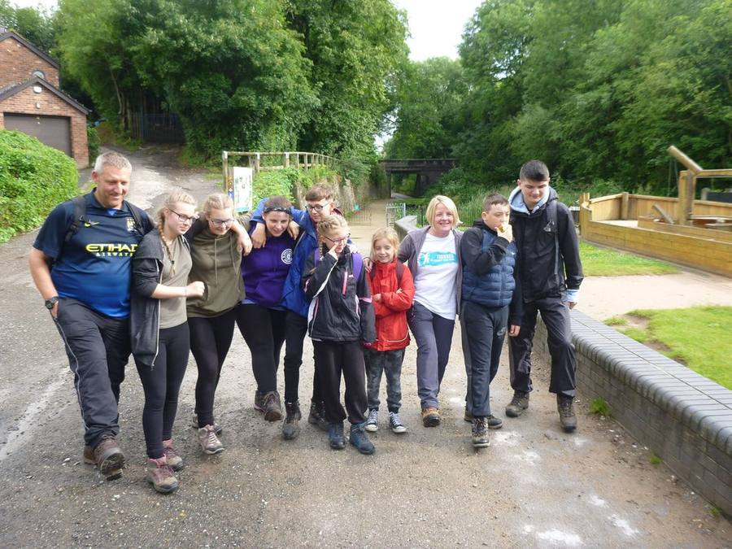
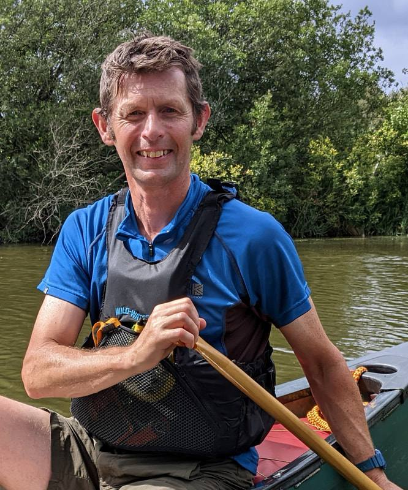
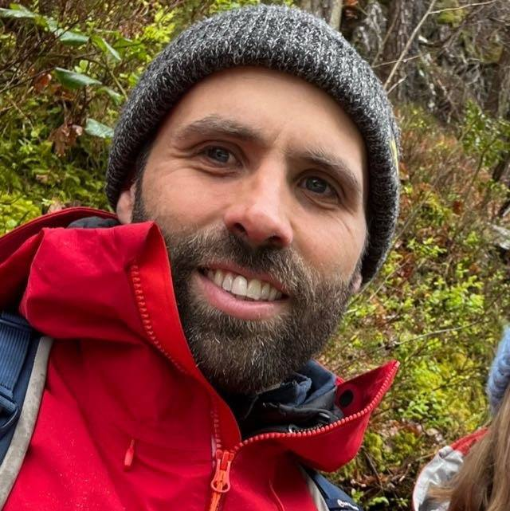

Educational visits advice and guidance
A guide for schools and settings

About this guide
Planning a trip is a lot of work, and getting it right matters. This guide explains how educational visits are planned, checked and approved, what our advisers look for, and what to do if something goes wrong.
It is written for head teachers, Educational Visits Coordinators (EVCs), business managers, visit leaders and governors in schools, colleges, academies, trusts and youth services.
Employers are responsible for the health and safety of staff and young people on educational visits, under the Health and Safety at Work Act. National guidance from the Outdoor Education Advisers’ Panel (OEAP) recommends that employers have access to competent advice, and most use a specialist adviser to approve higher-risk visits.
The Educational Visits Advice and Guidance Service is run by Oldham Council’s advisers at the Castleshaw Centre in Delph. It has supported visits for more than 20 years, and any school, college, academy or youth service can join, in Oldham or beyond.
How it works
Every visit is planned on Evolve, the online system schools use to plan, check and approve visits. It keeps the itinerary, risk management, staffing, consent and contacts in one place, so everyone in the chain sees the same plan.
The itinerary, risk management, staffing, transport and any activity providers, all in one place.
Your Educational Visits Coordinator, a senior member of staff, reviews the plan first and sends it back if anything is missing.
Or the head of your service, for colleges, youth and community settings.
For adventurous, residential and overseas visits, we review the whole visit against Oldham Council policy, OEAP National Guidance and legislation, usually within 10 working days.

Placeholder photograph (AI-generated).
Which visits need approval
Your EVC and head teacher approve lower-risk visits within your own setting. Under the service, our advisers approve the visits that carry most risk.
| Type of visit | Who approves | Submit |
|---|---|---|
| Adventurous activities such as climbing, watersports and trekking | Visit leader, EVC, head, then a Castleshaw adviser | At least 10 working days before recommended lead time |
| Residential visits | Visit leader, EVC, head, then a Castleshaw adviser | recommended lead time |
| Overseas visits | Visit leader, EVC, head, then a Castleshaw adviser | recommended lead time |
| Other local and day visits | Visit leader, EVC and head, within your setting | Following your own visits policy |
whether any other visit types need adviser approval, for example visits near water
Check that providers of adventurous activities hold an Adventure Activities Licence (AALA) where one is required, or the Learning Outside the Classroom Quality Badge, and include their details in your Evolve form. Our advisers can help you check.
What we look at
The question is simple: has this been organised safely and sensibly, in line with national guidance?
Clear aims, a realistic itinerary, and a plan B for the weather.
The significant risks spotted, and sensibly managed rather than buried in paperwork.
Transport, accommodation, providers, consent, medical needs and what happens in an emergency.
Enough adults, with the right experience and qualifications for the group and the activities.

Placeholder photograph (AI-generated).
We don’t just say no. We send the plan back with clear advice on what to change and why, and we’re happy to talk it through on the phone. Most visits are approved once those changes are made.
Before you submit
Print this page and work through it before the visit goes to your EVC. draft checklist, to be agreed with the advisers
What’s included
One annual Service Level Agreement covers advice, approval, Evolve, policy support, training and a 24/7 critical incident line.
Prices depend on the size and type of your establishment. Contact us for a quote. packages, price bands and agreement year
Training
At the Castleshaw Centre, or at your school for groups. Members get one free EVC place a year and subsidised places on other courses.
| Course | Length | For |
|---|---|---|
| Educational Visits Coordinator (EVC) | One day | New EVCs and the staff who support them, following DfE guidance |
| Visit Leader training | Three hours, or two twilight sessions | Staff leading and supporting visits, following the OEAP framework |
| Management of Visit Emergencies (MoVE) | length | Senior leaders who would lead the response to an incident |
| Head teacher and governor sessions | length | Head teachers and governors approving visits and setting policy |
| First Aid for group leaders (ITC) | Two days | Anyone leading groups outdoors. HSE approved |
| Minibus Driver Awareness (MiDAS) | Three hours | Staff who drive minibuses. Theory, at the centre or your school |
current course dates and member and non-member prices

Emergency support
Members of the service have a 24/7 critical incident line. An experienced adviser answers, helps you take stock and stays with you until the situation is under control.
24/7 critical incident line
0161 633 1803
For everyday advice in school hours, call 0161 770 8595. whether the line is staffed all year or in term time only
Management of Visit Emergencies (MoVE) training prepares senior leaders to run the response at school. Add the incident line to every visit’s emergency contacts and to each leader’s phone.
Cut out and keep
24/7 critical incident line
0161 633 1803
Cut out and keep
24/7 critical incident line
0161 633 1803
Your advisers
Our advisers aren’t desk-based. They still lead groups outdoors every week, so their advice comes from doing the job as well as knowing the guidance.

Senior tutor and adviser
Institute for Outdoor Learning accredited practitioner. IOSH. Level 4 canoe and kayak coach. Mountain bike leader. OEAP member.

Centre manager and adviser
Duke of Edinburgh’s Award assessor and supervisor. Former DofE manager. Paddlesport leader. OEAP member.
LOtC Quality Badge 101040. Licensed by AALA for climbing, watersports and trekking, licence number. Adventuremark accredited.
How to join
Tell us a little about your setting and we will send you a quote.
0161 770 8595
castleshaw.centre@oldham.gov.uk
Castleshaw Centre, Waterworks Road, Delph, Oldham OL3 5LZ